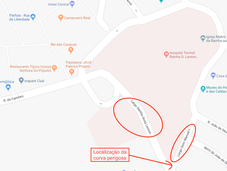
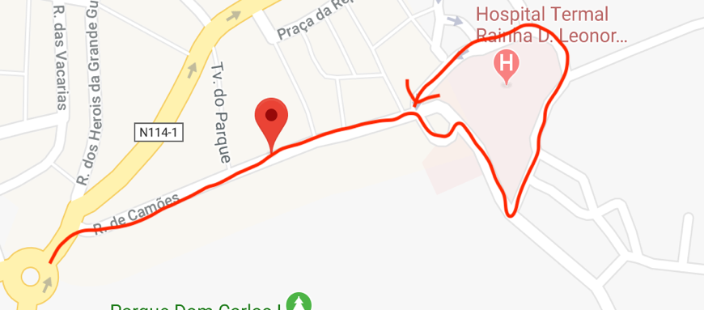
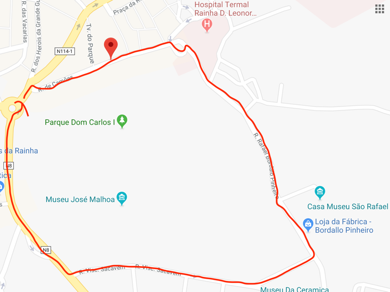
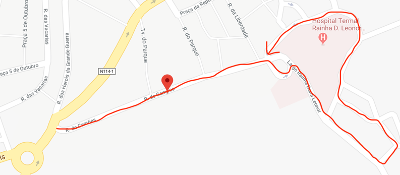
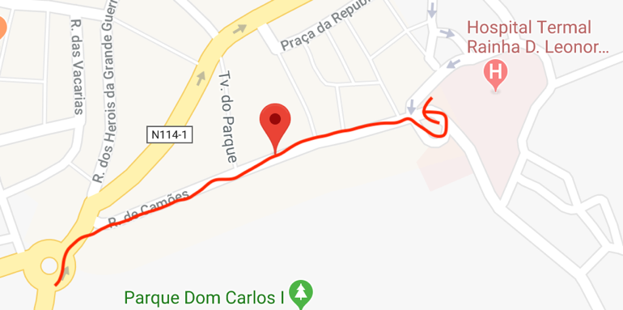

12 de Julho de 2018, Caldas da Rainha
Exmo. Sr.(a) Presidente da CMCR
ASSUNTO: Criação de uma zona de inversão de marcha fácil junto ao hospital termal
MOTIVAÇÃO
Como jovem residente de Caldas da Rainha e frequentador assíduo da rua de Camões, rua que dá acesso ao hospital termal e ao parque Dom Carlos I, considero que o funcionamento desta zona da cidade após as obras de requalificação é lamentável.
Venho então por este meio expor um dos vários problemas com que todos os dias me deparo, utilizando para isso alguns exemplos, e apelar ao bom censo da CM para a resolução destes mesmos problemas, apresentando uma proposta concreta de resolução.
É raro o dia que não vejo pessoas que vêm da rotunda da rainha para a Rua de Camões, não encontram estacionamento, querem fazer inversão de marcha e não podem, sendo a única opção viável seguir este conjunto de passos:
Este processo parece bastante simples, no entanto é impossível negar que existe aqui um problema quando nos prédios que fazem a ligação entre o largo Rainha Dona Leonor e o largo Dom Manuel I existem fachadas de prédios raspadas pelos carros que não conseguiram fazer bem a perpendicular (Mapa 1).

Mapa 1
Eu mesmo já me deparei com o caso de uma ambulância (que julgo não ser de Caldas da Rainha) que seguia à minha frente e que não se apercebendo do quão estreita e inclinada era perpendicular que ligava as duas ruas, raspou na parede.
Mais uma vez, é de salientar que o incidente da ambulância é apenas um no meio de muitos que acontecem todos os dias no largo do termal:
DADOS CONCRETOS
Irei agora realçar por tópicos (para uma fácil leitura) os problemas com percurso efetuado no Mapa 2 (melhor alternativa para se efetuar uma inversão de marcha):

Mapa 2
Tocando agora no tópico do turismo, acho que é importante referir quais os trajetos mais comuns que os turistas efetuam quando querem fazer uma simples inversão de marcha e se perdem por não saber que têm que virar à esquerda, de modo a seguir em direção ao Largo Dom Manuel I:

Mapa 3

Mapa 4
De certo que a CM fez este tipo de estudos que aqui apresento aquando das decisões tomadas na requalificação do largo do Termal, mas a ser deste modo a situação concreta que se apresenta não reflete esses mesmos estudos. Como futuro engenheiro, estou convicto de que somente estudos ponderados sobre a realidade concreta da cidade nos trarão um bom entendimento do seu funcionamento e uma maior satisfação dos utentes.
Não percebo, repito, porque é que o largo do Hospital Termal não funciona como uma “espécie de rotunda” de modo a facilitar as inversões de marcha. Trata-se de uma zona história da cidade, é certo, mas por causa disso mesmo merece uma valorização.
PROPOSTA DE RESOLUÇÃO
A minha atual sugestão, partilhada por muitas das pessoas que frequentam a rua é tão só isto: uma simples alteração da disposição dos vasos e dos bancos que se encontram no largo do termal.
Em vez da forma desorganizada em que se encontram os vasos e bancos expostos no largo do Termal, estes podiam ser colocados de forma estratégica, em forma de círculo, de modo a facilitar a inversão de marcha dos carros. Deste modo todos ganham e ninguém perde:
É de realçar novamente que não proponho a criação formal de uma rotunda. Penso que a referida reorganização dos vazos em modo rotunda é uma solução amigável, de bom censo e sem custos para a Camara Municipal das Caldas da Rainha.
No Mapa 5 podemos verificar o novo trajeto que poderia ser efetuado se fosse efetuada esta reorganização dos bancos e dos vasos no largo do termal e como funcionou outrora. Com apenas 5m de trajeto podemos ver que até o Google Maps concorda que é uma boa ideia, visto que no mapa até já aparece esta ligação de estrada que em tempos foi cortada pela colocação desorganizada de vasos.

Mapa 5
CONCLUSÃO
Para concluir que, gostaria de referir que esta medida iria enriquecer a cidade, não só para os moradores que podem economizar um pouco no combustível que consomem junto ao pulmão da cidade, como também para os turistas que iriam ser apresentados com uma cidade que teria agora menos um grau de complexidade. Aguardo uma resposta das entidades responsáveis, mas acima de tudo aguardo por uma resolução rápida e eficiente deste problema.
Informo ainda que tenciono tornar pública esta carta, enviando não só por correio e email para os órgãos responsáveis da CMCR como também publicando na página do facebook da CMCR.
Sinceramente,
Marcelo Fialho Jacinto
Email: marcelo.jacinto@tecnico.ulisboa.pt
Mestrado Integrado em Eng. Eletrotécnica e de Computadores
Instituto Superior Técnico, Lisboa